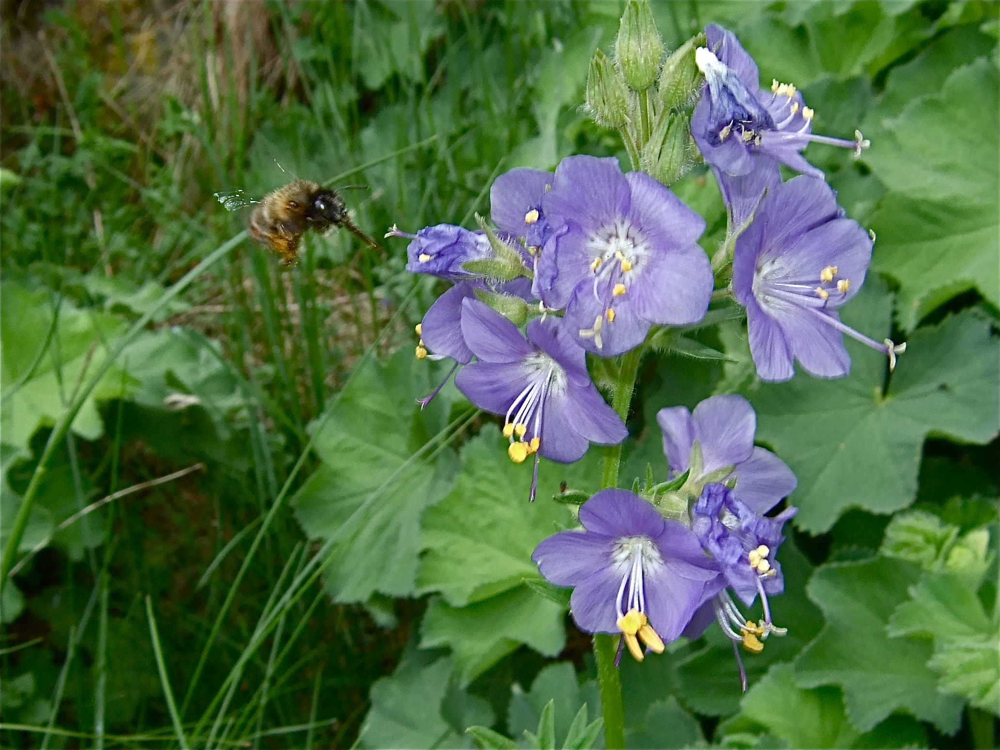

Eine Leiter zum Himmel
Die paarig-gefiederten Blätter sind so regelmäßig angeordnet, dass sie tatsächlich an die Sprossen einer Leiter erinnern. Im Bibelbericht hat Jakob im Traum eine Leiter gesehen, die zum Himmel reicht – und schon im Mittelalter wurde diese Pflanze nach jenem Bild benannt. Die deutsche Bezeichnung „Himmelsleiter" ist nichts anderes als die deutsche Übersetzung dieses biblischen Vergleichs.
Eine Hochstauden-Pflanze in Tieflagen
Ursprünglich ist die Jakobsleiter ein Hochstauden-Gewächs der montanen Bergwiesen, etwa der Alpen und Mittelgebirge. In tieferen Lagen kommt sie meistens als Gartenflüchtling vor – seit dem Mittelalter wurde sie in Klostergärten und Bauerngärten kultiviert, weil sie als Heilpflanze galt. Wer sie heute am Bachufer oder in einer Wiese im Flachland findet, schaut wahrscheinlich auf einen „Ausreißer" aus einem nahen Garten.